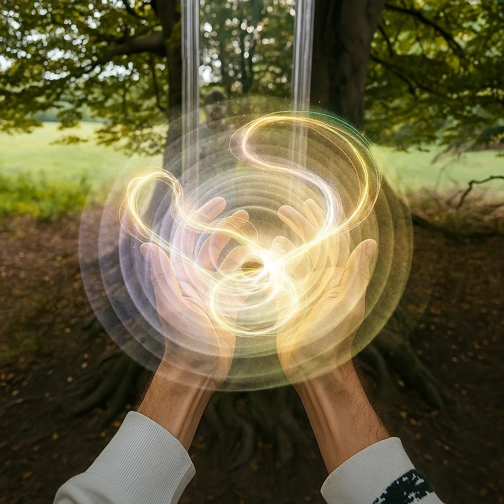

Begin with
a possibility.
What do you want to bring into being? Pick a feeling. Picture a shape. Let an idea become the first gesture.

There’s a kind of magic only you can make.
Turn a gesture into a galaxy. A room into a ritual.
A moment into something extraordinary.
Gather a little gravity. Conduct a school of stingrays. Pull a thread of light and see where it goes.
Magic Fingers turns your hands into a wonderfully unpredictable instrument. Follow the feeling. Find what works. Make it yours.
Gather particles into gravitational clusters. Pull them close, let them orbit, then send a whole new world spinning.
FOUR FLAVORS OF WONDER. ENDLESS WAYS TO PLAY.02 / BRING THE IMPOSSIBLE HOME
Your table becomes part of the trick. Your walls join the dance. Light meets the real world, bouncing off the things around you.
This is mixed reality with a mischievous streak. A beautiful light show for an audience of you.
REAL ROOM. UNREAL POSSIBILITIES.
CONCEPT ART / YOUR WORLD, REIMAGINEDNo ancient secrets. No perfect technique.
Just your attention, your imagination, and a willingness to play.
What do you want to bring into being? Pick a feeling. Picture a shape. Let an idea become the first gesture.
Attract. Scatter. Twist. Combine forces, break your own patterns, and keep the happy accidents.
Give the moment your full attention. Repeat a gesture until it becomes a rhythm. Intention becomes ritual. The magic is in the doing.
Put on something you love. Let the beat become color, the melody become movement, and the space around you come alive.
Audio reactivity turns Magic Fingers into a music visualizer you can reach into.
05 / YOUR PERSONAL SPELLBOOK
Find a combination that feels like you? Save your creations. Make your own presets. Come back to that exact kind of wonderful whenever the mood strikes.
Build a collection of little universes.
Leave plenty of room for the next one.
The film is coming. Leave your sense of possibility open.
MAGIC FINGERS / FILM TO COMEFor the curious. The playful. The beautifully unpractical.
Something extraordinary is taking shape.